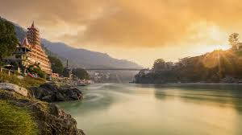
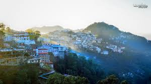
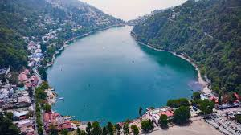
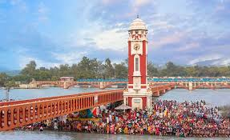
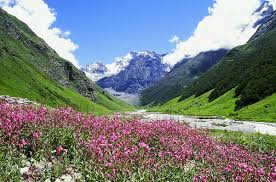

Rishikesh

Known as the 'Yoga Capital of the World' and a major pilgrimage site, situated on the banks of the River Ganga, famous for its ashrams, river rafting, and adventure sports.
Dehradun & Mussoorie

Dehradun is the capital, nestled in the Doon Valley, known for its pleasant weather and educational institutions. Mussoorie is a popular hill station with scenic views, often called the 'Queen of the Hills'.
Nainital

A popular hill station famous for the emerald-coloured Naini Lake, surrounded by mountains, offering boating, trekking, and stunning colonial-era architecture.
Haridwar

An ancient city and a major Hindu pilgrimage centre, where the River Ganga enters the plains. It's famous for the daily Ganga Aarti (river worship ceremony) at Har Ki Pauri.
Valley of Flowers National Park

A UNESCO World Heritage Site known for its meadows of endemic alpine flowers and the diverse variety of flora and fauna. It's a spectacular spot for trekkers and botanists.